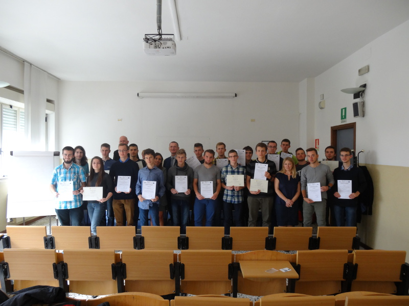

About project
Project "Look into the future" is realized by Complex of Electronic Schools as part of EU program PO WER. As part of this project, 100 students had three weeks long vocational internships in fields of IT and electronics. They took place in different countries: Hungary, Greece, Portugal, Italia and Turkey. Project expands students' skills, what incerases their chances on job market.
